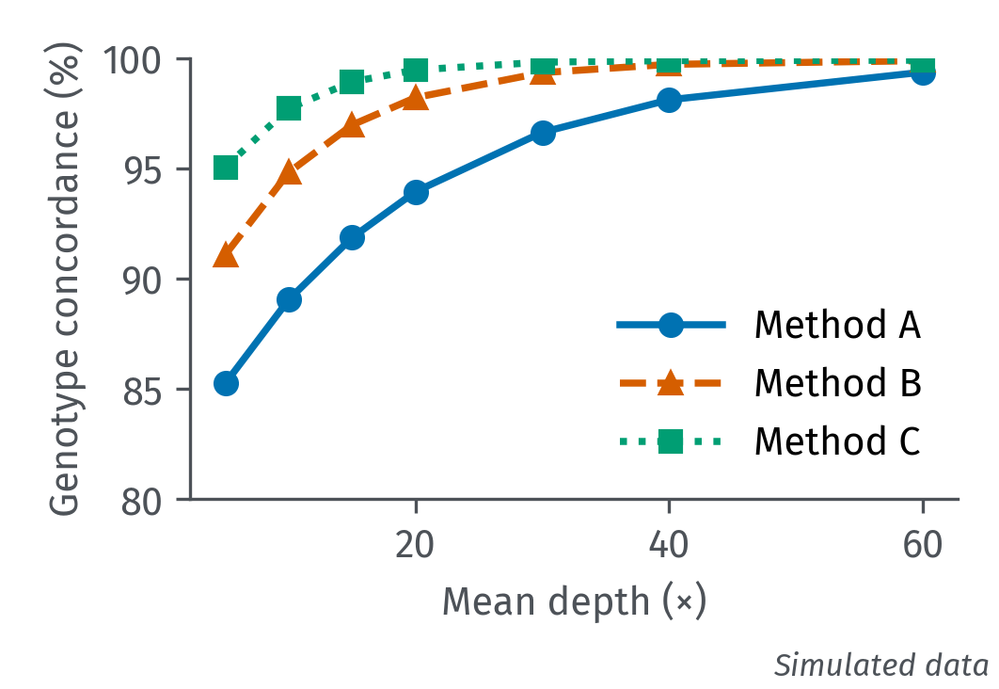

One template for XeLaTeX and reveal.js
Jen-Hsiang Ou, Ph.D.
2026-10-29
Department of Medical Genetics, National Taiwan University Hospital

Simulated data, for layout only.
| Caller | Precision (%) | Recall (%) | F1 (%) |
|---|---|---|---|
| Method A | 97.1 | 92.4 | 94.7 |
| Method B | 98.3 | 95.0 | 96.6 |
| Method C | 99.0 | 97.8 | 98.4 |
Simulated values for layout only.
Hardy-Weinberg genotype frequencies for allele frequencies $p + q = 1$:
$$p^2 + 2pq + q^2 = 1$$Posterior probability of genotype $G$ given reads $D$:
import pysam
def count_pass(path: str, min_qual: float = 30.0) -> int:
# Count PASS records with QUAL >= min_qual
with pysam.VariantFile(path) as vcf:
return sum(1 for rec in vcf if rec.qual >= min_qual)# Keep PASS variants and index the result
bcftools view -f PASS -Oz -o pass.vcf.gz calls.vcf.gz
tabix -p vcf pass.vcf.gz